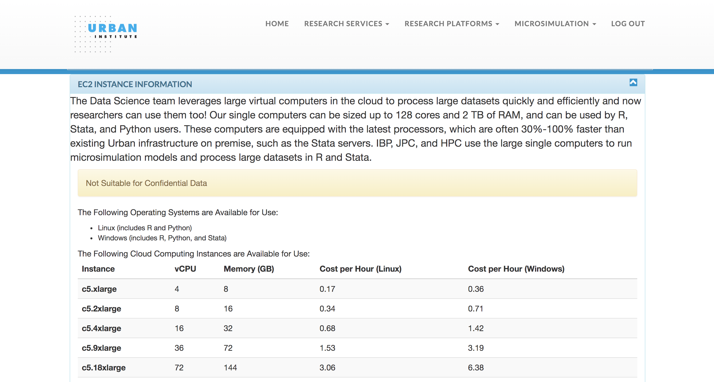
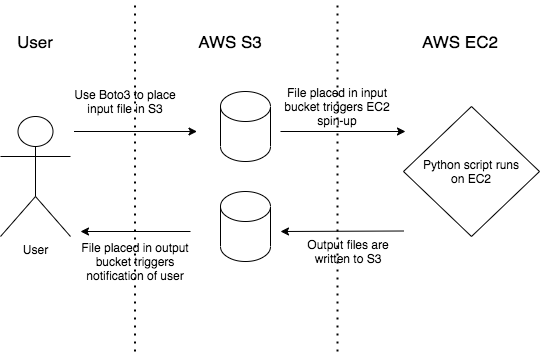

AWS & Python
Contents
AWS & Python#
For data storage and computing, Amazon Web Services (AWS) can be a scalable and cost-effective alternative to on-premise options. This guide demonstrates how Urban Institute researchers can use Python in conjunction with the AWS services S3 and EC2 to create a cloud-based workflow.
S3#
Boto3 is the official AWS SDK for Python. It provides an easy-to-use, well-documented API that lets you write Python code to interact with AWS services. In this guide we will explore specifically how Boto3 can be used to interact with AWS S3, Simple Storage Service.
S3 can be used to store big data files for a relatively low price. It is essentially a file storage system, consisting of buckets, which are analogous to folders. You can use Boto3 to place files (referred to as objects in S3) into buckets and download objects that are stored in buckets, among other actions. In the context of a research model or script, this means you can store and read input files from S3 and write output files back to S3.
Setup#
Getting started with Boto3 involves installing Boto3 and authenticating using AWS credentials as described in this guide. The most secure way to do so is by setting up your credentials using the Amazon Command Line Interface (CLI). To do so, you will need an access key and secret access key. To set up credentials with the permissions you need, you should contact the TECH team.
Boto3 commands#
In Boto3, there are multiple classes that enable interaction with S3. In this guide, we will use the client class, which is a low-level, object-oriented interface to AWS.
Listing buckets and objects#
To list buckets and objects in S3, you first you need to instantiate a client resource which represents the Amazon S3 service.
Then, you can use the syntax below to list all of the buckets that you have access to. If your desired bucket doesn’t show up, contact the TECH team to update the permissions associated with your credentials.
import boto3
s3 = boto3.client("s3")
response = s3.list_buckets()
for bucket in response["Buckets"]:
print(f'{bucket["Name"]}')
Note that S3 uses key-value pairs to store objects, rather than a traditional file system with a hierarchy of folders. You can use prefixes to organize files in S3 buckets, which are conceptually similar to directories or subfolders. The code below would list the name of all objects within a particular prefix that you have access to.
response = s3.list_objects_v2(Bucket="my-bucket",
Prefix="my-prefix")
for object in response["Contents"]:
print(f'{object["Key"]}')
Uploading and downloading files#
Boto3 also provides simple methods to upload and download files from S3. The code below would upload a file stored locally called example.csv to the specified bucket and prefix.
s3.upload_file(Bucket="my-bucket",
Filename="example.csv",
Key="my-prefix/example.csv")
Similarly, the code below would download that file from S3.
s3.download_file(Bucket="my-bucket",
Filename="example.csv",
Key="my-prefix/example.csv")
For a full list of operations you can perform on your bucket using Boto3, refer to this documentation. Keep in mind that you will need to have specific permissions associated with your credentials to perform any action.
Using Pandas#
Recent versions of Pandas let you read and write files to S3 with simplified syntax using the s3fs package under-the-hood. You can install s3fs using pip install s3fs.
The code below would read the file example.csv from S3 as a Pandas dataframe.
import pandas as pd
df = pd.read_csv("s3://my-bucket/my-prefix/example.csv")
Similarly, the code below would write that dataframe to S3 at the specified path.
df.to_csv("s3://my-bucket/my-prefix/example.csv")
S3 triggers#
S3 can be used to trigger AWS events relating to other services. For example an S3 bucket can be configured so that when a file is placed into it:
An email is sent to a user
An EC2 instance spins up and runs a script which takes in that file as input
Contact the TECH team if you would like to set up a trigger for your S3 bucket.
EC2#
EC2, or Elastic Compute Cloud, is an Amazon service which provides virtual computers in the cloud. Rather than running your models and scripts on your local computer or on Urban servers, you can run them on EC2 which provides customizable compute capacity, memory, and more.
Using Tech Tools to spin up an EC2 instance#
The TECH team at Urban has designed a tool for researchers to easily create and terminate EC2 instances. This tool is hosted on the Tech Tools site via the Urban Institute intranet here.
Confidential Data: These instances are NOT suitable for processing confidential data, but if you are working on a project that uses confidential data and you would like to leverage an EC2 instance, the TECH team would be happy to create a custom instance that adheres to data use requirements for you.
The Python interface for the Tech Tools instances use the latest jupyter/scipy-notebook Docker image. This means that a recent version of Python and many commonly used packages for data analysis and scientific computing will come pre-installed. This also means that you will get access to a user-friendly interface for creating and working with Jupyter notebooks, text editors, and terminal windows. See the JupyterLab documentation for more info.

To begin, under the “Research Platforms” dropdown on the Tech Tools site, select “Start or Stop EC2 instance.” Then, select the instance type you would like based on your specific needs and submit the form. For Python users, we generally recommend Linux instances.
After your instance has spun up, you will receive an email with links that point your browser to JupyterLab or RStudio on your instance. Note: You must be within Urban’s IP range to access those links from your browser (e.g. through a virtual desktop if you are working remotely). When you are finished with the instance, you can terminate it, and you will be charged only for the amount of time that it was running. You will also get periodic email reminders while your instance is running.
Putting it all together#
S3 and EC2 can be used to create a workflow entirely hosted in the cloud. The Tech Tools site simplifies the process of working with EC2, abstracting many details of the creation and termination away from the user. For more complex workflows using EC2 and other AWS services, the TECH team can partner with you to design and implement a solution. An example workflow for a Python data processing script is detailed below.
As mentioned earlier, a rule can be set so that the placement of a file into an S3 bucket triggers the creation of an EC2 instance. This workflow begins with an input data file being placed into an input S3 bucket via Boto3. This triggers an EC2 instance to spin up, obtain the input file, and run the data processing script. When the script completes, the output file is written to the output S3 bucket, and the EC2 instance automatically terminates. Additionally, a rule is set on the output bucket to trigger a notification of the user when a file is placed into it.

This and similar workflows have been employed by the Urban Institute TECH team to run data processing scripts and research models, including the TPC Tax Calculator, the Education Data Portal, and the Social Genome Model.